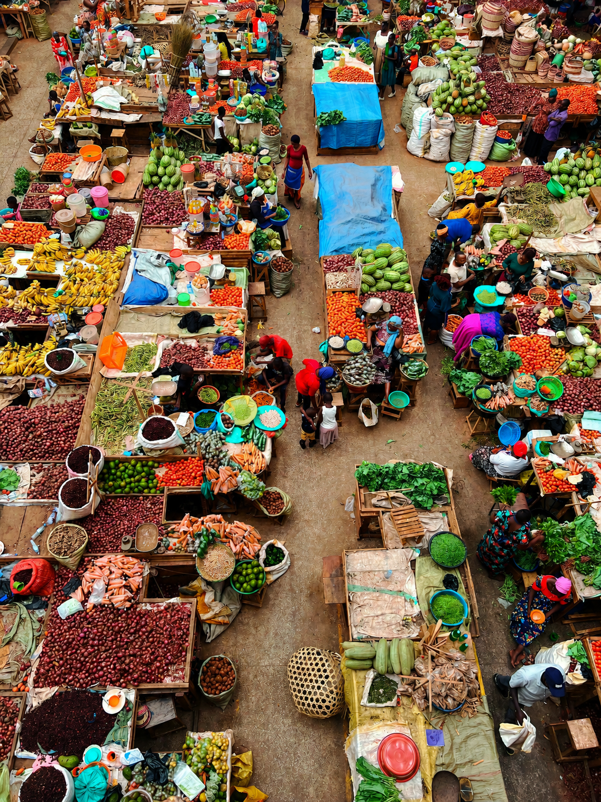
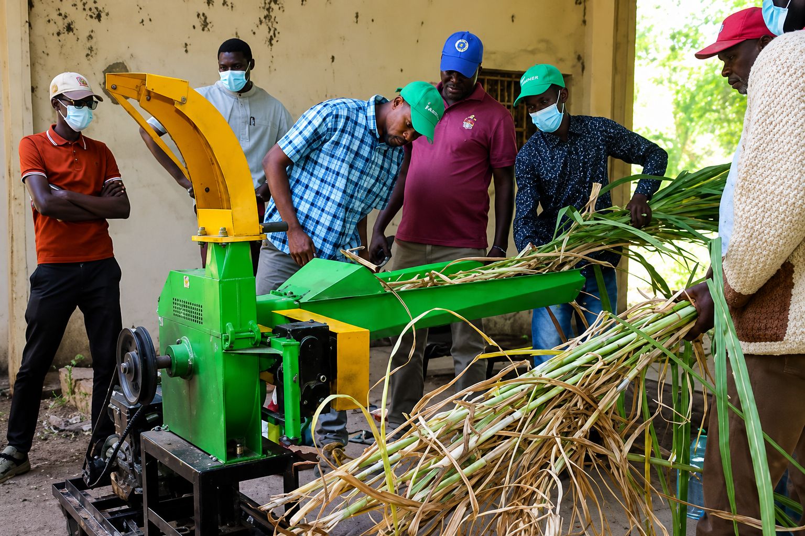

Formation

Techniques modernes de culture
Session de formation sur les méthodes innovantes de culture du manioc et du maïs pour nos producteurs de la région Maritime.
Formations, récoltes et foires agricoles de la coopérative AGRI-TOGO
Session de formation sur les méthodes innovantes de culture du manioc et du maïs pour nos producteurs de la région Maritime.

Initiation à l'agroforesterie et gestion durable des sols pour préserver la fertilité des terres sur le long terme.

Apprentissage des techniques de transformation locale : farine de manioc, jus d'ananas et produits dérivés.



Présentation de nos produits transformés et rencontre avec les distributeurs locaux et internationaux.

Visite guidée des champs, dégustation des produits AGRI-TOGO et échanges avec les producteurs.

Participation au salon avec stand dédié aux produits AGRI-TOGO : maïs, manioc et dérivés.